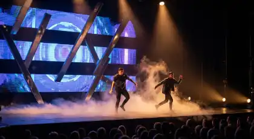
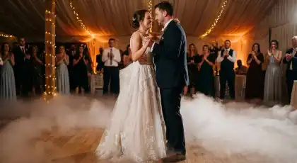
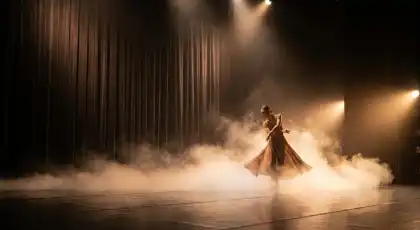
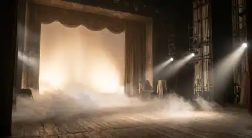
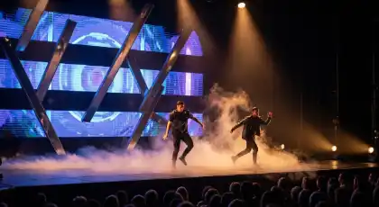
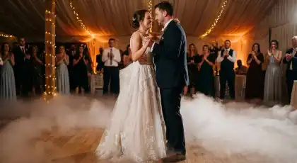
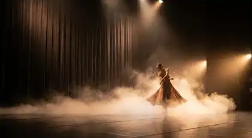
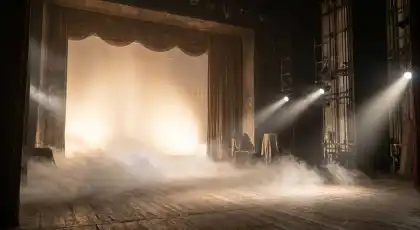

RENTA DE
HUMO BAJO
Efectos de niebla al ras del suelo para primeros bailes mágicos, entradas espectaculares y ambientación dramática en bodas y eventos en CDMX
¿Sueñas con ese momento mágico donde bailas sobre las nubes durante tu primer baile de bodas? La renta de humo bajo de RESOIL es la solución profesional que crea efectos de niebla espectaculares al ras del suelo, transformando tu primer baile en un momento cinematográfico inolvidable. Desde bodas elegantes hasta XV años, eventos corporativos y entradas dramáticas, nuestras máquinas de humo bajo crean esa atmósfera etérea perfecta para fotos y videos en CDMX.
Nuestras máquinas de humo bajo profesionales utilizan tecnología de hielo seco (CO2) o sistemas eléctricos avanzados para crear niebla densa que permanece al ras del suelo sin dispersarse. Cada instalación de RESOIL está diseñada para crear ese efecto "bailando sobre nubes" que hace viral tu contenido en redes sociales. Con nuestro humo bajo profesional, convertimos tu evento en una experiencia visual dramática digna de Hollywood.
Galería de Eventos con Humo Bajo
Instalaciones profesionales de efectos de niebla que transforman primeros bailes y eventos en CDMX
 







Estas imágenes son algunos de nuestros eventos de éxito con humo bajo profesional en CDMX. Cada instalación refleja nuestro compromiso con efectos dramáticos perfectos y atención al detalle que caracteriza a RESOIL.
Por Qué la Renta de Humo Bajo Profesional Es la Decisión Correcta para Tu Evento
En un mundo donde cada momento de tu boda o evento debe ser perfecto, el humo bajo ofrece algo que ningún otro efecto puede replicar: la ilusión mágica de bailar literalmente sobre las nubes, creando fotografías y videos cinematográficos que se vuelven virales. En RESOIL, entendemos que el humo bajo no es solo un efecto especial, es el toque dramático que transforma tu primer baile en un momento de película.
¿Por qué las mejores bodas y eventos en CDMX eligen el humo bajo de RESOIL? Porque ofrecemos más que máquinas de niebla: entregamos instalaciones profesionales con tecnología de punta, operadores expertos y coordinación perfecta con tu equipo de eventos. Nuestros técnicos profesionales manejan todo el proceso, desde la colocación estratégica de máquinas hasta la sincronización perfecta con música y fotografía, permitiéndote disfrutar de efectos Hollywood sin preocupaciones técnicas.
Aplicaciones Estratégicas: Dónde Brilla Nuestro Humo Bajo
Momentos Donde los Efectos Dramáticos Son Esenciales
Primeros Bailes de Boda
El uso más popular y mágico del humo bajo. Crea la ilusión perfecta de bailar sobre nubes durante tu primer baile como pareja casada. Niebla densa al ras del suelo que permanece estable durante toda la canción (3-5 minutos). Ideal para fotos y videos cinematográficos que se vuelven virales en redes sociales. Coordinado perfectamente con iluminación y música.
Entradas Espectaculares de Novios
Entradas dramáticas que dejan sin aliento a los invitados. Humo bajo que cubre toda la pista de baile cuando los novios hacen su gran entrada a la recepción. Efecto sorpresa total que crea ambiente cinematográfico. Perfecto para bodas que buscan ese momento WOW que todos recordarán y compartirán.
XV Años - Vals Tradicional
Vals de XV años transformado en momento de cuento de hadas. Quinceañera bailando con su padre o chambelanes sobre niebla etérea. Crea fotos dignas de revista que la quinceañera atesorará para siempre. Combinable con iluminación LED para efectos de color personalizados según tema del evento.
Eventos Corporativos Premium
Lanzamientos de productos con entradas dramáticas de CEOs o presentadores. Conferencias y convenciones que buscan impactar visualmente. Eventos de networking con atmósfera sofisticada. Perfecto para empresas que quieren crear experiencias memorables que reflejen la calidad de su marca.
Presentaciones Artísticas
Shows en vivo, presentaciones de danza y performances teatrales. Humo bajo que crea profundidad visual y dramatismo en el escenario. Utilizado por coreógrafos profesionales para efectos visuales impactantes. Ideal para grupos de baile, presentaciones musicales y espectáculos que requieren producción de nivel profesional.
Sesiones Fotográficas Profesionales
Sesiones pre-boda o trash the dress con efectos cinematográficos. Fotos editoriales de moda con atmósfera etérea. Videos musicales y contenido para redes sociales. Humo bajo crea profundidad y dramatismo que eleva la calidad de producción. Perfecto para fotógrafos que buscan crear contenido único e Instagram-worthy.
La versatilidad de nuestro humo bajo profesional lo convierte en la solución perfecta para cualquier evento que busque ese toque dramático y cinematográfico. Desde bodas íntimas hasta producciones masivas, nuestros sistemas se adaptan a cualquier visión y espacio.
Paquetes de Humo Bajo: Soluciones para Cada Momento
RESOIL ofrece 5 paquetes escalables de renta de humo bajo, desde momentos íntimos hasta eventos masivos. Cada paquete incluye operador profesional dedicado, coordinación con DJ/fotógrafos, instalación completa y desmontaje. Las especificaciones técnicas se traducen directamente en efectos visuales perfectos.
| Paquete | Tecnología | Equipamiento | Ideal Para | Duración Efecto |
|---|---|---|---|---|
| Romántico | Hielo Seco (CO2) | 1 máquina profesional + hielo seco suficiente + operador dedicado | Primer baile de boda íntima, pista pequeña 20-30m², eventos 50-100 personas | 1 momento de 3-5 minutos |
| Elegante | Hielo Seco (CO2) | 2 máquinas profesionales + hielo seco + colocación estratégica dual | Primer baile + entrada de novios, pista mediana 30-60m², bodas 100-200 personas | 2 momentos de 3-5 minutos |
| Premium | Sistema Eléctrico Avanzado | 2 máquinas eléctricas profesionales + sistema de control DMX + operador experto | Múltiples momentos durante evento, pista grande 60-100m², eventos 200-400 personas | Hasta 4 momentos de 5 minutos |
| Espectacular | Hielo Seco + Eléctrico | 3 máquinas híbridas + sistema completo + iluminación LED sincronizada + operador + asistente | Eventos grandes con múltiples momentos dramáticos, producciones profesionales, galas | Hasta 6 momentos de 5 minutos |
| Producción Total | Sistema Completo Multi-Máquina | 5+ máquinas estratégicamente ubicadas + control profesional + equipo técnico completo | Eventos masivos 400+ personas, producciones de TV, shows en vivo, conciertos | Efecto continuo todo el evento |
Especificaciones Técnicas Universales (Todos los Paquetes)
- ✓ Tecnología de Hielo Seco (CO2): Efecto más denso y dramático, niebla permanece al ras del suelo sin elevarse
- ✓ Sistemas Eléctricos Profesionales: Máquinas de glicol con enfriadores que crean niebla densa sin hielo seco
- ✓ Operador Profesional Dedicado: Presente durante todo el evento, coordina momentos exactos con DJ y fotógrafos
- ✓ Cobertura Completa: Calculamos cantidad exacta de máquinas según dimensiones de pista y altura de techo
- ✓ Seguridad Certificada: Humo bajo 100% no tóxico, no deja residuos, seguro para niños y embarazadas
- ✓ Coordinación con Equipo: Sincronización perfecta con DJ, fotógrafos, videógrafos y coordinador de eventos
- ✓ Cobertura Geográfica: CDMX y área metropolitana (sin costo adicional en zona central)
- ✓ Garantía: Máquinas de respaldo en sitio + seguro de responsabilidad civil incluido
Solicita tu Cotización de Humo Bajo
Completa el formulario con los detalles de tu evento y recibe una cotización personalizada al instante vía WhatsApp. Nuestro equipo te responderá en menos de 30 minutos.
Preguntas Frecuentes sobre Renta de Humo Bajo
Resuelve todas tus dudas sobre nuestro servicio especializado de humo bajo profesional
El efecto de humo bajo denso dura entre 3-5 minutos por carga:
Primeros Bailes (canción de 3-4 minutos): Una sola carga es suficiente para cubrir toda la canción
Entradas Más Largas: Recargamos cada 5 minutos para mantener efecto constante
Eventos Continuos: Sistemas eléctricos pueden generar efecto continuo durante horas
Dispersión Natural: El humo bajo se disipa gradualmente en 8-12 minutos sin dejar residuos
Factores que Afectan Duración:
- Corrientes de aire en el espacio (ventanas, puertas, clima)
- Tamaño de la pista de baile y altura del techo
- Cantidad de personas moviéndose en el área
- Temperatura ambiente del salón
Nuestro operador profesional monitorea el efecto constantemente y recarga según necesidad para mantener densidad perfecta.
No, el humo bajo profesional es 100% limpio y seguro:
Hielo Seco (CO2):
- Vapor de agua puro sin químicos
- No mancha vestidos de novia ni ropa de invitados
- No deja residuos ni olor
- Se disipa naturalmente sin dejar rastro
Sistemas Eléctricos (glicol):
- Fluido de glicol vegetal no tóxico (mismo usado en efectos de cine)
- No mancha telas ni superficies
- Puede dejar sensación mínima de humedad que se evapora en minutos
- Completamente seguro para pisos, alfombras y muebles
Seguridad Certificada:
- No tóxico para humanos y mascotas
- Seguro para niños, embarazadas y personas con alergias
- No irrita ojos ni vías respiratorias
- Aprobado para uso en eventos cerrados y al aire libre
El humo bajo funciona MEJOR en espacios cerrados, pero hay opciones para exteriores:
Espacios Cerrados (ÓPTIMO):
- Salones con clima controlado: efecto perfecto y duradero
- Sin corrientes de aire que dispersan la niebla
- Efecto permanece al ras del suelo durante 3-5 minutos completos
Terrazas Techadas/Semi-Cerradas (BUENO):
- Funcionan bien si hay paredes o barreras que protegen del viento
- Mejor con clima controlado (sin ventiladores fuertes)
- Recomendamos más máquinas para compensar dispersión
Jardines al Aire Libre (LIMITADO):
- Solo efectivo con velocidad de viento menor a 10 km/h
- Mejor en espacios protegidos por árboles o estructuras
- Efecto dura menos (2-3 minutos) debido a dispersión natural
- Requiere 2-3 veces más máquinas que en interiores
NO Recomendado: Espacios completamente abiertos con viento fuerte (más de 15 km/h). El viento dispersa el humo inmediatamente sin permitir que se asiente al ras del suelo.
Ofrecemos visita técnica gratuita para evaluar tu espacio y recomendar la mejor configuración.
Ofrecemos ambas tecnologías según las necesidades de tu evento:
Hielo Seco (CO2) - Más Popular para Bodas:
- Ventajas: Efecto MÁS denso y dramático, niebla permanece perfectamente al ras del suelo, 100% limpio sin químicos
- Duración: 3-5 minutos por carga, ideal para momentos específicos (primer baile)
- Ideal Para: Primeros bailes de boda, entradas dramáticas, momentos puntuales de gran impacto
- Consideración: Requiere recargas manuales cada 5 minutos (nuestro operador se encarga)
Máquinas Eléctricas (Glicol con Enfriador) - Para Eventos Largos:
- Ventajas: Efecto CONTINUO sin recargas, control remoto de intensidad, programable para múltiples momentos
- Duración: Hasta 4-6 horas de operación continua
- Ideal Para: Eventos largos con múltiples bailes, shows en vivo, producciones teatrales
- Consideración: Efecto ligeramente menos denso que hielo seco (pero más versátil)
Sistema Híbrido - Lo Mejor de Ambos Mundos:
Combinamos hielo seco para momentos clave (primer baile) + máquinas eléctricas para efectos continuos el resto del evento. Disponible en Paquetes Espectacular y Producción Total.
Nuestros asesores te ayudan a elegir la tecnología óptima según tu visión, presupuesto y características del evento.
Depende del tipo de tecnología y las alarmas del venue:
Hielo Seco (CO2) - NO Activa Alarmas:
- Es vapor de agua puro, NO es humo real
- Las alarmas detectan partículas de combustión, no vapor frío
- 100% seguro en salones con alarmas sensibles
- Recomendado para hoteles, salones corporativos y venues con sistemas de seguridad estrictos
Máquinas Eléctricas (Glicol) - Puede Activar Alarmas Muy Sensibles:
- Genera niebla de glicol que SÍ puede activar alarmas fotoelétricas sensibles
- NO activa alarmas de ionización (más comunes)
- Riesgo mayor en sistemas modernos de detección precoz
Protocolo de Seguridad RESOIL:
- Visitamos el venue antes del evento para identificar tipo de alarmas
- Realizamos prueba de efecto previa en coordinación con seguridad del lugar
- Notificamos formalmente a gerencia y seguridad sobre efectos especiales
- Mantenemos contacto con seguridad durante todo el evento
- En casos extremos, coordinamos desactivación temporal de alarmas (con autorización del venue)
Recomendación: Si tu venue tiene alarmas muy sensibles o restricciones estrictas, recomendamos hielo seco (CO2) como la opción más segura.
Incluimos coordinación completa con seguridad del venue en todos nuestros paquetes sin costo adicional.
Sí, calculamos cantidad exacta de máquinas según dimensiones de tu pista:
Pista Pequeña (20-30m²): 1 máquina profesional suficiente
Pista Mediana (30-60m²): 2 máquinas estratégicamente ubicadas en esquinas opuestas
Pista Grande (60-100m²): 3-4 máquinas distribuidas uniformemente
Pista Muy Grande (100m² +): 5+ máquinas con sistema de control centralizado
Factores que Consideramos:
- Dimensiones Exactas: Largo x ancho de pista de baile
- Altura del Techo: Techos altos (+4m) requieren más máquinas para efecto visible
- Forma del Espacio: Espacios rectangulares vs cuadrados vs formas irregulares
- Corrientes de Aire: Ventanas, puertas, clima que afectan dispersión
- Duración Deseada: Momento puntual vs efecto continuo
Colocación Estratégica Profesional:
Nuestro equipo técnico posiciona las máquinas en puntos óptimos (usualmente esquinas o perímetro) para que el humo bajo cubra uniformemente toda el área sin zonas descubiertas.
Visita Técnica Gratuita: Para pistas grandes o espacios complejos, ofrecemos visita técnica previa donde medimos dimensiones, evaluamos corrientes de aire y diseñamos plan de colocación óptimo.
Garantizamos cobertura completa sin importar el tamaño de tu pista de baile.
Tiempos de instalación completa según paquete:
Paquete Romántico (1 máquina): 30 minutos antes del momento del humo bajo
Paquete Elegante (2 máquinas): 45 minutos antes
Paquete Premium (sistema eléctrico): 60 minutos antes
Paquete Espectacular (sistema híbrido): 90 minutos antes
Paquete Producción Total (5+ máquinas): 2-3 horas antes
Proceso de Instalación:
- Reconocimiento del Espacio: Evaluación de corrientes de aire y puntos óptimos
- Colocación de Máquinas: Posicionamiento estratégico para cobertura uniforme
- Conexiones Eléctricas: Cableado seguro y organizado
- Carga de Hielo Seco: Preparación de carga inicial (si aplica)
- Prueba de Efecto: Activación de prueba para verificar cobertura y densidad
- Coordinación Final: Reunión con DJ, fotógrafos y coordinador de eventos
Operador Permanece en Sitio:
El operador profesional permanece durante todo el evento (no solo durante el montaje). Monitorea constantemente el efecto, recarga máquinas según necesidad y coordina momentos exactos de activación con tu equipo.
Desmontaje: Aproximadamente 20-30 minutos después de finalizar el último momento con humo bajo. Todo el proceso está incluido en la renta sin costo adicional.
Sí, TODOS los paquetes incluyen operador profesional dedicado que permanece durante todo el evento:
Responsabilidades del Operador:
- Coordinación con DJ/Música: Sincroniza activación exacta con inicio de canción del primer baile
- Coordinación con Fotógrafos: Asegura que efecto esté perfecto cuando fotógrafos/videógrafos capturan el momento
- Monitoreo Constante: Observa densidad del humo y corrientes de aire durante todo el efecto
- Recargas Estratégicas: Recarga máquinas en momentos precisos para mantener efecto continuo
- Ajustes en Tiempo Real: Modifica intensidad según necesidad (más denso para fotos, menos denso para movimiento)
- Múltiples Momentos: Coordina varios momentos de humo bajo durante el evento (entrada + primer baile + baile de padres, etc.)
Experiencia Profesional:
- Técnicos especializados con 5+ años de experiencia en bodas y eventos
- Capacitación certificada en seguridad de efectos especiales
- Conocimiento profundo de coordinación con equipos de eventos
- Manejo de situaciones imprevistas (cambios de horario, viento inesperado, etc.)
Comunicación Continua:
El operador se mantiene en comunicación constante vía radio/WhatsApp con tu coordinador de eventos, DJ y fotógrafos para asegurar sincronización perfecta de cada momento.
Discreción Profesional: Nuestros operadores visten de negro y trabajan de manera discreta sin interferir visualmente con el evento.
El servicio de operador profesional está 100% incluido en todos los paquetes sin costo adicional.
Crea el Momento Mágico de Bailar Sobre las Nubes con Humo Bajo Profesional RESOIL
Para Novios y Quinceañeras: El humo bajo no es solo un efecto especial, es el toque cinematográfico que transforma tu primer baile en un momento de película que recordarás para siempre. Con niebla densa al ras del suelo, creas esa ilusión mágica de bailar literalmente sobre las nubes que hace viral tu contenido en redes sociales.
Con RESOIL, no solo rentas máquinas de humo: inviertes en una experiencia completa. Operador profesional dedicado, coordinación perfecta con DJ y fotógrafos, tecnología de punta y garantía total de efecto perfecto. Perfecto para bodas elegantes, XV años de cuento de hadas y eventos que buscan ese momento WOW inolvidable.
Para Wedding Planners y Coordinadores: Tu reputación depende de crear momentos mágicos que superen expectativas. El humo bajo de RESOIL es tu aliado para primeros bailes cinematográficos que generan lágrimas de emoción y miles de shares en redes sociales. Instalaciones profesionales que combinan dramatismo visual con confiabilidad técnica.
Facturación CFDI inmediata, contratos transparentes, coordinación impecable con todo tu equipo de eventos. Porque entendemos que en bodas de alto nivel, cada detalle debe ser perfecto. Más de 3,000 primeros bailes mágicos nos respaldan, desde bodas íntimas hasta producciones masivas de lujo.
Garantía Total: Operador profesional dedicado incluido • Coordinación con DJ y fotógrafos • Tecnología de punta (hielo seco + eléctrico) • 100% efecto garantizado o reembolso completo